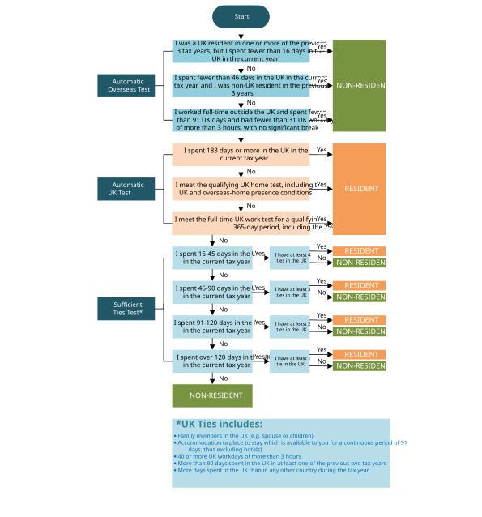

Why residence is considered first
For the tax year 2026/27, from 6 April 2026 to 5 April 2027, an individual’s UK residence status is determined under the Statutory Residence Test (SRT) in Schedule 45 to the Finance Act 2013. Residence is determined separately for each tax year and can affect the income brought into a UK Income Tax calculation.
- A UK-resident individual is normally within the scope of UK tax on income arising in the UK and overseas.
- A non-UK-resident individual is generally outside the scope on foreign income but can remain taxable on particular UK-source income.
- Split-year treatment, a double taxation agreement and special charging or relief provisions can alter the practical result.
Residence is not the same as nationality, citizenship, immigration status or the location of a bank account. Domicile is no longer the connecting factor for the taxation of foreign income and gains from 6 April 2025.
How to count days spent in the UK
Prepare the UK day count for the whole tax year before applying the residence tests.
- Start with the midnight rule. A day normally counts as a day spent in the UK if the individual is in the UK at the end of that day, meaning at midnight. A daytime visit normally does not count under this basic rule.
- Identify qualifying transit days. A midnight in the UK may be disregarded where the individual arrives as a passenger from one country outside the UK, leaves as a passenger for another country outside the UK on the following day, and does not undertake activities substantially unrelated to the journey.
- Consider exceptional circumstances. A day may be disregarded for specified parts of the SRT where circumstances beyond the individual’s control prevent departure from the UK and the detailed conditions are met. The statutory maximum is 60 days in a tax year, but this is a limit rather than an automatic allowance. Exceptional-circumstance days cannot be disregarded for every SRT condition.
- Apply the deeming rule where required. A non-midnight day can become a deemed UK day if the individual was UK resident in one or more of the previous three tax years, has at least three UK ties for the current year, and has more than 30 qualifying non-midnight days. If all conditions are met, qualifying days after the first 30 are added to the UK day count. This rule does not apply to the UK-day limit in the third automatic overseas test.
- Keep separate records for other day-based conditions. UK workdays, overseas workdays, days spent in a home and days involving a child use their own statutory definitions. They are not determined solely by the midnight count.
A practical record should show arrival and departure times, location at midnight, work exceeding three hours, homes visited, the purpose of any transit and evidence supporting any exceptional circumstance or deemed-day adjustment.
The order of the Statutory Residence Test
Apply the SRT in its statutory order. Do not begin by counting ties unless the automatic tests leave the position unresolved.
- Count relevant UK days and identify prior residence. Day counting has detailed rules, including rules for days of presence at midnight, transit days, exceptional circumstances and certain deemed days.
- Apply the automatic overseas tests. If one is met, the individual is non-UK resident for the year, subject to the detailed statutory conditions.
- Apply the automatic UK tests. If no automatic overseas test is met and an automatic UK test is met, the individual is UK resident.
- Apply the sufficient ties test. If no automatic test decides the result, compare the individual’s UK ties with their UK day count. The thresholds differ depending on whether the individual was UK resident in any of the previous three tax years.

Automatic overseas tests
In outline, the automatic overseas tests consider very limited UK presence, with different limits according to recent residence history, and full-time work overseas combined with restrictions on UK days, UK workdays and breaks from overseas work. Each test contains definitions and conditions that must be checked against the legislation.
Automatic UK tests
In outline, the automatic UK tests consider:
- presence in the UK for at least 183 days in the tax year;
- whether the individual has a qualifying UK home and meets the associated presence conditions, taking account of any overseas home; and
- full-time work in the UK over the relevant 365-day period, subject to the detailed workday and timing conditions.
Having a UK home or describing the individual’s work as full-time does not by itself establish UK residence. The detailed conditions for the statutory home and work tests must be applied:
- UK home test: broadly, there must be a period of at least 91 consecutive days during which the individual has a UK home, the required part of that period must fall within the tax year, and the individual must satisfy the UK-home presence condition. The existence and use of any overseas home must also be considered.
- Full-time UK work test: the individual must satisfy the statutory full-time work calculation for a qualifying 365-day period. More than 75% of the relevant workdays in that period must be UK workdays of more than three hours, and at least one such UK workday must fall within both the 365-day period and the tax year.
Sufficient ties test
If the automatic tests do not determine residence, consider the relevant ties:
- Family tie: broadly, a UK-resident spouse, civil partner, partner or minor child, subject to exceptions.
- Accommodation tie: qualifying UK accommodation available for a sufficient period and used by the individual.
- Work tie: working in the UK for the required number of days, using the statutory workday definition.
- 90-day tie: spending more than 90 days in the UK in either or both of the previous two tax years.
- Country tie: relevant only to someone resident in one or more of the previous three tax years; the UK is the country in which they spend the greatest number of days.
The number of ties needed for UK residence falls as UK days increase. Use the current statutory table or HMRC’s RDR3 guidance after establishing prior residence, rather than relying on a general impression of connection with the UK.
Split years and international interactions
An individual is resident or non-resident for the whole tax year under the SRT. Where the individual is UK resident, a statutory split-year case may divide the year into a UK part and an overseas part for specified tax purposes. Treatment is automatic if the detailed conditions are met; arriving in or leaving the UK is not enough by itself. Continue to Split-year treatment for the eight cases, priority rules and tax consequences.
Domestic residence, treaty residence and temporary non-residence are separate questions. A double taxation agreement may contain residence tie-breaker rules and allocate or limit taxing rights, while the temporary non-residence rules may charge specified income or gains when an individual returns to the UK.
Foreign income and gains regime
From 6 April 2025, the former remittance-basis regime was replaced by a residence-based foreign income and gains (FIG) regime. A qualifying new resident may claim relief for eligible foreign income and gains during the first four tax years of UK residence after at least ten consecutive tax years of non-UK residence, subject to the statutory conditions and consequences of a claim. A split year still counts as a full UK-resident year when testing eligibility. Continue to the Foreign Income and Gains study notes for detailed coverage.
Information to establish before concluding
- UK presence for the whole tax year and the reason for any potentially disregarded day.
- Residence status for earlier tax years.
- Homes and available accommodation in the UK and overseas.
- UK and overseas work patterns, including hours worked on each relevant day.
- Family connections and days spent in each country.
- Arrival, departure and return dates, treaty residence and any FIG claim.